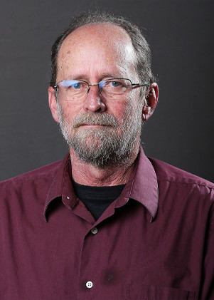
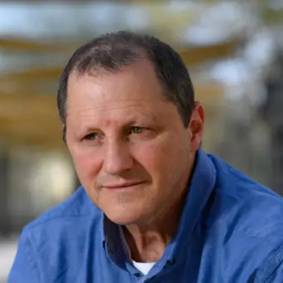
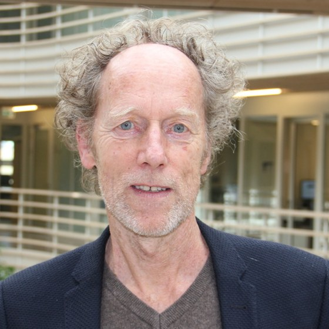

My three mentors, in Indiana, Israel and the Netherlands. Each remains an active collaborator and co-author.

Prof. Paul B. Brown
Professor of Aquaculture
Forestry & Natural Resources, Purdue University, USA
Mentor at Purdue
My mentor and host at Purdue. He directs the aquaculture team I joined in 2025 and leads the Blue is Green (BiG) programme. We co-author work on disinfection by-products and waste-to-protein.

Prof. Amit Gross
Professor, Dean and Director, Zuckerberg Institute for Water Research
Ben-Gurion University of the Negev, Israel
Mentor in Israel · M.S. & research years
My mentor since my master’s at Ben-Gurion, and through my years there as researcher and group leader. We work together on desert aquaponics, anaerobic digestion and turning fish waste into protein.

Prof. Karel Keesman
Professor of Systems Modelling
Wageningen University & Research, Netherlands
PhD advisor · Wageningen, 2018–2023
My PhD advisor at Wageningen, a specialist in modelling complex agri-food systems. The mass-and-energy-balance approach behind my integrated dynamic models comes from his group, and we still publish together on aquaponics modelling.
Portraits: Purdue University (Brown) · Ben-Gurion University of the Negev (Gross) · Wetsus (Keesman).